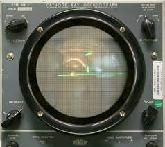

Animation is a powerful type of media, it brings pictures or drawings to life by displaying them frame-by-frame, creating the illusion that it is moving.
Animation can be shown in either
2-d, 3-d, claymation, stop motion and puppetry.
Stop motion is an unique way to animate in because it uses only objects in the real world instead of digital pictures.
Claymation is simular to stopmotion, as it uses only clay. to animate in claymation, you get a piece of clay as big as you want, then you mold the clay to make it look like its moving. good examples of clatmation are the shows: Wallace and gromit, Shaun the sheep and Pingu.
Radio is a type of mass media and communication service, normally used for the news, announcements and entertainment. The first known radio transmission of some one's voice was made by Reginald Fessenden, a Canadian inventor and radio pioneer. in 1906 Massachusetts.
In August 1922, the first-ever radio commercial for a real estate developer aired in New York City, marking a pivotal moment in the evolution of the advertising industry. This advertisement heralded a new era of promotion through the emerging medium of radio. This milestone spurred the growth of networks, leading to the establishment of the NBC (National Broadcasting Company) by RCA (Radio Corporation of America) in 1926. NBC's inception revolutionized the radio industry, setting the stage for the development of a robust national broadcasting system.
Radios work by converting electronic signals into radio waves through a transmitter, which are then picked up by the antenna on the top, then converted back into the orginal signal. The signal is then transmitted through a speaker in the front.
Music is a beautiful art that uses sounds and rythms to create various sounds and rhythms to craft good-sounding melodies.
There are some genres to music, such as pop, rock, classical and hip-hop, and can can be created using a variety of instruments orr the human voice. Whether it's uplifting spirits, inducing relaxation, or incuting live dance, music serves as a universal language that transcends cultural boundaries and resonates with people of all backgrouds.

Social media is a type of Digital Technology that allows people to connect to virtual networks and communities. Social media is used for sharing things(messages, information, updates, etc) all around the world. But it is normally used for apps like: Youtube, Facebook, Twitter, Instagram and snapchat, but the most popular app of them all is Tiktok.
Social media started as a way to people to interact with people online but soonly began to become something bigger and expand with more purposes. Then a website called myspace had been the first ever network to reach 1 million monthly active users.
In the year 1997, the first 2 social media websites were released to the public, named: Bolt and Six Degrees
Six degrees lasted 3 whole years before it got taken down, it had around 3.5 million registered users before being bought by YouthStream Media Networks for $125 million. Six Degrees was basiclly the same as any other social media network today, but then no one really knew the consept of social media yet.
Bolt lasted an entire decade from its release, from 1997 to 2007 before being filled for bankruptcy in august 14.
Video games are played across the world by pretty much all ages. Some of the most played game around the world are:
Certain games are played on a certain device or a console, some examples are: Playstation 5, Xbox, Nintendo switch, computer or Phone/ipad.
The first video game was called: Tennis for Two.
Computer games in the past were instead downloaded digitally, the game was inside of a disk/floppy disk and interted in the front of the computer.
Programming is used to create things in the internet, like websites, algorithms and even games. There are many coding languages to pick, some of the easest
are: HTML 5, Css and Python. To make this project, I used Html and css. Coding languages use something called a syntax, syntax are a set of rules that define what a various combinations of symbols mean.
Here is an example of Html syntax:
A list of Programming languages from easest to Hardest:
| Easest | Medium | Hardest |
|---|---|---|
| Scratch | Java | C++ |
| Html/Css | C# | MATLAB |
| Java | GDscript | Rust |
Programmers use applications to write code with, some are simple and some are complex. So here are some that i reccomend:
Thank you for viewing my project!
Source & credits:
Studio binder: animation
https://www.studiobinder.com/blog/what-is-animation-definition/
Britannica: radio
https://www.britannica.com/topic/radio
W3schools: a bit of the CSS code and color
https://www.w3schools.com/css/default.asp
Funkids: Radio
https://www.funkidslive.com/learn/top-10-facts/top-10-facts-about-radio/
Britannica: Music
https://www.britannica.com/art/music
Study: Music
https://study.com/academy/lesson/what-is-music-definition-terminology-characteristics.html
Vedantu: Music
https://www.vedantu.com/blog/interesting-facts-about-music
VScode: The app i used for coding in Html and Css
Thank you for viewing my project!